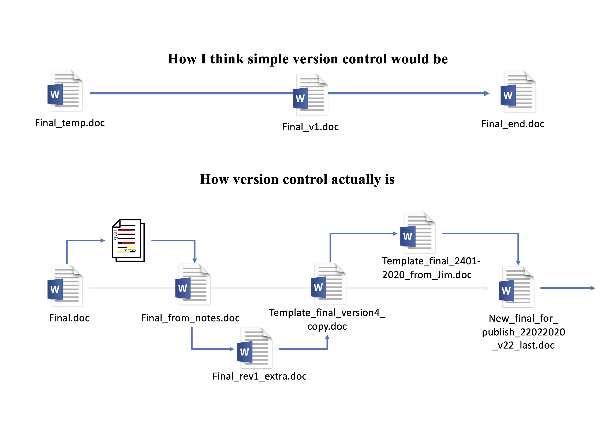
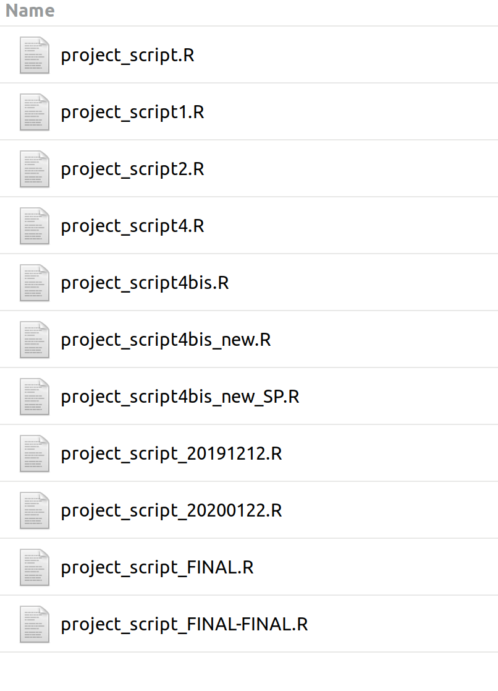

Hands-on Activity 1 - Theory
Plan
- Project organisation
- R style guide
- Git
- Introduction to functions
Projects
For this workshop : a folder on your computer
There are many definitions of a project: it can be a single analysis for a paper or an entire cohort study with many papers.
In this workshop: a folder on your computer where we will analyse the NHANES data.
Projects
RStudio natively support project oriented wrokflow.
Advantages:
- The working directory is set by RStudio to the project folder.
- It is easy to switch between projects from the drop-down menu.
Project organisation
Not a single organization fits everybody’s needs, but being consistent throughout different projects or within a research group helps collaborating.
Directories
data/: Ready-to-analyze dataset, intermediate datasets.data-raw/: Data from the outside world untouched. Can contain scripts to import data from the internet and prepare it.R/: R files containing functions.python/for Python.scripts/orcode/: Scripts for things that need to be run once.qmd/,md/,Rmd/: Quarto and markdown documents.
Directories
output/: Folder with outputs, can contain images, graphs, or other stuff.figs/: Folder with figures produced by your scripts.results/: Results from the project, e.g., CSV tables.docs/: Documentation or rendered documents.man/: Documentation for R packages.extra/: Extra, non-code, files.
Files
README: Must-read file. At least one in the project directory, but can be added to any folder.LICENSE: License file for your project..gitignore: List of files that Git should ignore.
Naming files
Human and machine-readable.
- Dates: YYYY-MM-DD (ISO format).
- Easy to order, use double digits.
- Separate name elements to make them easy to subset with
filesfunctions. - Name should be regular expression friendly: avoid spaces, punctuation, accented characters, and case sensitivity.
Naming files
Some examples
This faciliate this kind of operations:
Naming files
More examples
# Good
other/2014-06-08_abstract-for-sla.docx
other/filenames-are-getting-better.xlsx
01-load-data.R
02-exploratory-analysis.R
03-model-approach-1.R
04-model-approach-2.R
fig-01.png
fig-02.png
fig01_scatterplot-talk-length-vs-interest.png
fig02_histogram-talk-attendance.png
report-2022-03-20.qmd
report-2022-04-02.qmd
report-draft-notes.txtImprove R code
Style guide
Why adopt a coding style:
- Consistency
- Makes code easier to write (fewer decisions when typing)
- Easier to read
Tip
Tidyverse style guide: https://style.tidyverse.org/
Syntax
- Variable and function names:
- Only lowercase letters and numbers.
- Use
_to separate words within a name, e.g.,day_one; day_1.
- Space after a comma, e.g.,
mean(x, na.rm = TRUE). - Curly braces,
{}:{should be the last character on the line.- The contents should be indented by two spaces.
}should be the first character of the line.
Syntax
Quickly fix the syntax of your code using styler package:

Naming things
- Avoid changing common R functions or objects.
- Use verbs for functions:
do_something(). - New line after a pipe (
%>%or|>). - Prefer using element names to retrieve object index instead of number indexing.
Naming things
Bad:
Better:
Naming things
Comment as you code, provide as much detail as you can. Your future self will thank you.
Classic version control
Classic version control
Git
- Keeps track of every changes to a file.
- Can instantly restore any previous version of a file.
- Allows you to split your work into different branches for testing purposes.
- Handles merging files by comparing their modifications and resolving differences if any.
Important
With Git, you only need one version of your files!
Which files
Git can track text files:
- R Script
- .csv
- Markup documents like Markdown, Quarto, or LaTeX files
Terms to know
%%{init:{'themeCSS': ".actor {stroke: DarkBlue;fill: White;stroke-width:1.5px;}", 'sequence':{'mirrorActors': false}}}%%
sequenceDiagram
participant W as Working folder
participant S as Staged
participant H as History
W->>S: Add
S->>H: Commit
repository,repo: a folder tracked by git.working folder: files not tracked by Git, or contain new modification not saved yet.add: add files or modifications to the staged areas,commit: create a snapshot of changes and save it in Githistory. Commits must have a short description.
Terms to know
%%{init:{'themeCSS': ".actor {stroke: DarkBlue;fill: White;stroke-width:1.5px;}", 'sequence':{'mirrorActors': false}}}%%
sequenceDiagram
participant W as Working folder
participant S as Staged
participant H as History
W->>S: Add
S->>H: Commit
stage: Files and modification here are tracked by Git and can be put into the history with acommit. They still can be lost (unsafe).history: all the changes that have beencommited. Everything that has been commited in the Git history will never be completely gone (safe).
Terms to know
Branches and repository:
local: refer to the repository that you store on your computer. We only work locally today.remote: refer to repository stored online like in GitHub.branch: branches are parallel versions of your project. They allow you to experiment things without affecting the main project until you’re ready to merge them back.merge: merging is the process of integrating changes from one branch into another. It combines the histories of both branches, creating a single, unified history.
Functions
Why write functions?
DRY - Don’t Repeat Yourself
Create functions for actions that are often repeated:
- Import datasets
- Create models
- Extract results from models
- Create tables
Functions
Important
A function is a bundled sequence of steps that achieve a specific action.
For example, + (sum) is a function, mean() is a function …
Functions are made of a function call, arguments, and the function body:
Tip
Type sd in R (without parenthesis) to see how sd() calculate standard deviation
Functions
The output of the function depends only on the inputs. Identical inputs will give identical results.
Functions can replace loops and make your code much clearer.
Functions are easier to share between projects and can be gathered in a package.